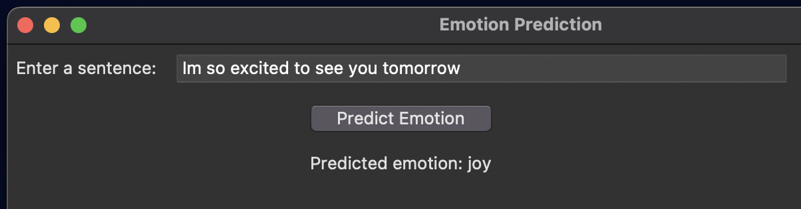
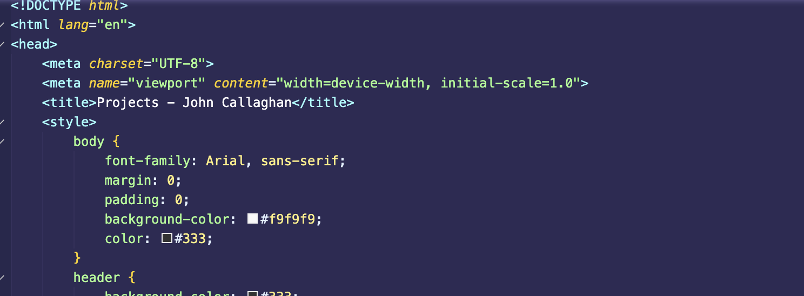
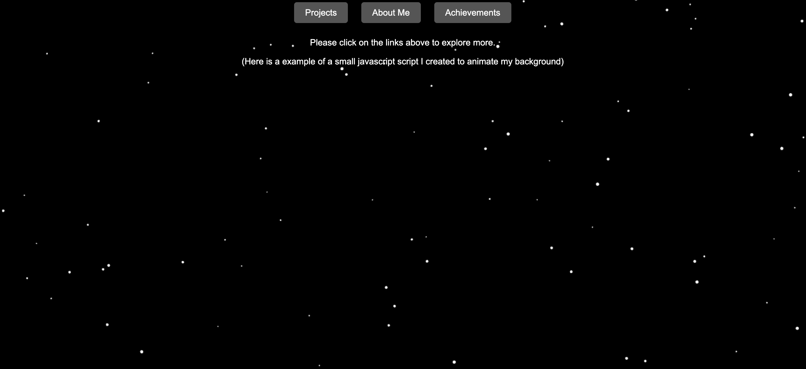
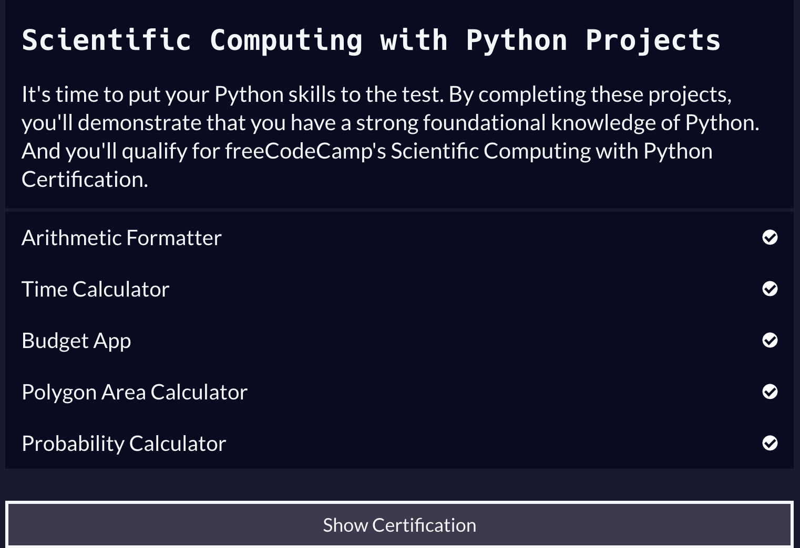

Projects - John Callaghan

(Can all be found on my Github)
This project contains multiple Python scripts for processing HTML documents and searching for relevant HTML information based on the tf-idf data used in these scripts. It makes use of multiple Python libraries to tokenize, vectorize, and parse HTML documents. Along with more complex methods I later decided to implement such as query expansion and term weighting

This Python program predicts emotions (sadness, joy, love, anger, fear, surprise) based on user input sentences. It uses a logistic regression model trained on a dataset containing labeled text data to predict the emotion based on key words in the sentence given to the user. This project built on the knowledge of the previous one using a new dataset to try and give myself a new challenge
This portfolio website (the one you are currently viewing) TP showcases my skills, projects, and achievements. It is built using HTML, CSS, and a bit of javascript. I used all of the knowledge i gained from my web-development module at university to make this.
JavaScript code initializes and animates particles on an HTML canvas element, adjusting particle behavior based on the canvas dimensions. It utilizes object-oriented programming principles to create and update particles, providing dynamic visual effects.
This was part of my course for free code camp and made me utilize all the skills I had learn't throughout the course by building a total of 5 projects, Each one deepended my understanding of planning, testing and helped my overall python programming skills
All Projects can be found on my github 